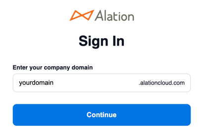

Alation Anywhere for Microsoft Teams¶
Alation Cloud Service Applies to Alation Cloud Service instances of Alation
Available from 2023.1.5
With Alation Anywhere for Teams, you can connect Alation to Microsoft Teams, enabling you to interact with the Alation catalog directly within Teams. You can search Alation in Teams and post interactive previews of Alation catalog pages to your Teams conversations. By using Alation Anywhere for Teams, you can get more work done without leaving the context of your important work conversations.
Prerequisites¶
To use Alation Anywhere for Teams, you must be an Alation Cloud Service customer on the cloud native architecture. To determine if you’re already on the cloud native architecture or to request migration to it, contact Alation Support.
Alation Anywhere for Teams is not available for on-premise installations of Alation.
Get Started¶
Before you can use Alation Anywhere for Teams, you need to install the Alation app in Teams and then log into Alation through Teams.
Add Alation to Teams¶
To add the Alation app to Teams:
Open Teams and click Apps in the left sidebar.
Search for Alation and click on it.

Click Add.
You should get a success message. Click Got it. Alation has now been added to your Teams application.
Log Into Alation in Teams¶
To use Alation Anywhere for Teams, you must be logged into Alation through Teams. To log into Alation through Teams:
At the bottom of a Teams message window, click the three dots (…).
If you don’t see the Alation app, search for “Alation” using the search box.
Select the Alation app.
Click the plus (+) button in the top right corner of the Alation for Teams app, then select Login.
Click Connect.
A new browser tab will open. Enter your company’s Alation domain, then click Continue.
You’ll be redirected to the Alation login screen or your identity provider. Enter your credentials and log in. You’ll then see a message that you’ve successfully authenticated.
Click Go to Microsoft Teams. If your browser asks whether to open Teams, allow it.
Search Alation in Teams¶
By searching Alation within Teams, you can find and post information from your Alation catalog without leaving the context of a Teams conversation.
There are two ways to search: simple search and advanced search. The advanced search lets you filter by object type, while the simple search doesn’t.
To do a simple search:
At the bottom of a Teams message window, click the three dots (…).
Select the Alation app. The simple search window opens.
Enter your search terms into the search box. A list of the top ten search results appears as you type.
Click a search result to add an Alation preview to your message compose box. Type your own message if desired, then post it for your colleagues to see.
To do an advanced search:
At the bottom of a Teams message window, click the three dots (…).
Select the Alation app.
Click the plus (+) button in the top right corner of the Alation for Teams app, then select Advanced search.
Enter your search terms into the search box.
Optionally, select an object-type filter to limit the search results to a specific object type. You can select multiple object types to filter by.
Click Search. A list of the top ten search results appears. If you want to see more about one of the results, you can click the title of a search result to open the full page in Alation.
When you find what you want, click Send it to chat to add an Alation preview to your message compose box. Type your own message if desired, then post it for your colleagues to see.
If you couldn’t find what you wanted, you can use Alation’s full search instead. Click Go to Alation at the bottom of the search window.
Link to Alation Pages in Teams¶
If you already have a link to an Alation catalog page, paste it into a Teams message. If it’s a fully supported object type, wait a few seconds to get a rich preview of the page in your message. See below for supported object types.
Use Rich Previews of Alation Catalog Pages¶
When you post a message containing a rich preview of an Alation catalog page, readers can see details about the page directly in Teams without having to go to Alation.
Catalog page previews are interactive. From the preview, you can:
Open the catalog page by clicking on the page title.
See trust check flags next to the page title. Hover over the icon to see what kind of flag it is.
See additional information by clicking the buttons at the bottom of the preview. For example, you can see custom fields for an article or table, a list of columns for a table, raw SQL for a query, and so forth.
Click the Star button to add the page to your favorites in Alation.
Click the Watch button to get notifications when the page is updated.
For queries, open the query in Compose or open the query form.
For Alation Conversations, like the Conversation or mark it as resolved.
Supported Object Types¶
Alation object types that can show rich catalog page previews in Teams are:
Articles
Article groups (old glossaries)
Conversations
Data source objects
Domains
Glossaries
Queries
Table objects
Other Alation objects may show a limited preview when you post from search or no preview when you paste a plain link into a Teams message.
Get Help in Teams¶
To see the available Alation commands in Teams:
At the bottom of a Teams message window, click the three dots (…).
Select the Alation app.
Click the plus (+) button in the top right corner of the Alation for Teams app, then select Help. A popup will appear listing the available commands: search, help, login, and logout.
Log Out of Alation in Teams¶
If you want to disconnect Alation from Teams, you can log out of Alation in Teams. You will no longer be able to search Alation within Teams or post or interact with rich previews of Alation pages until you log back in.
To log out of the Alation app in Teams:
At the bottom of a Teams message window, click the three dots (…).
Select the Alation app.
Click the plus (+) button in the top right corner of the Alation for Teams app, then select Logout. You will be logged out immediately.
A message will appear confirming that you’ve been disconnected from Alation. Click Connect to log back in or Not now to remain logged out.
Support and Privacy¶
Alation support email: support@alation.com
Alation support site: https://alation.force.com
Alation privacy policy: https://alation.com/privacy-policy